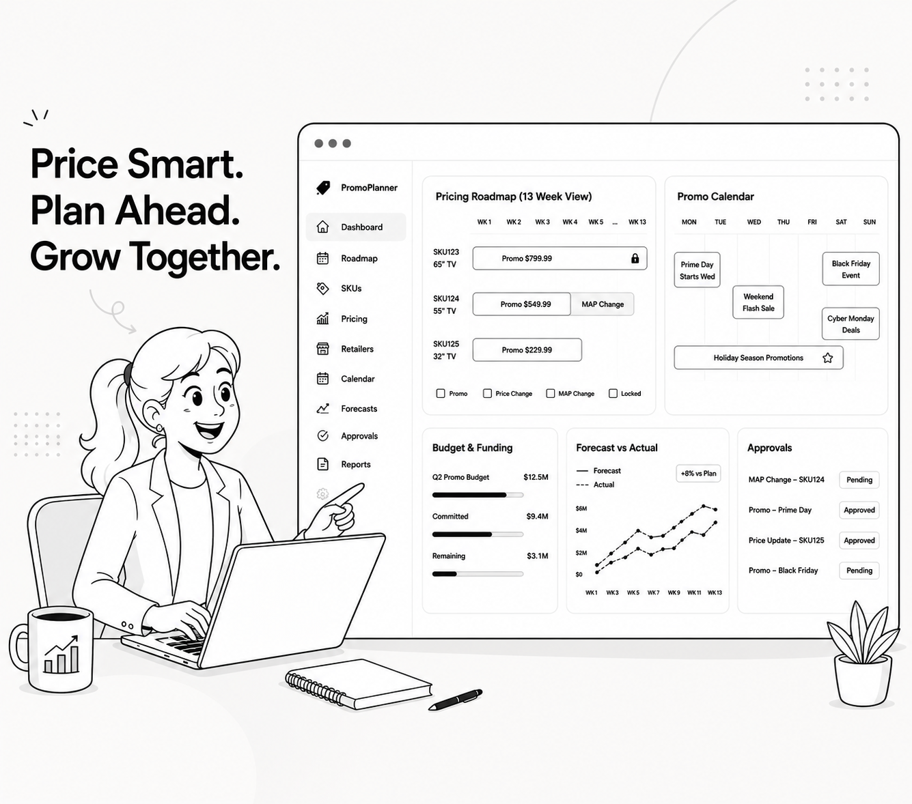

Senior UX Product Designer with 15+ years turning complex enterprise workflows into intuitive, AI-empowered products. Currently at Roku, previously Sage and Symantec.
End-to-end projects spanning enterprise SaaS, AI-assisted workflows, and complex operational platforms.

Designed an end-to-end automated promotional planning system for Roku's Supply Ops team — replacing fragmented spreadsheets and email workflows with a unified platform for intake, approval, and finance reconciliation.
Read case studyBuilt Roku's finance backbone for TRC content spend — from scattered Excel trackers to an end-to-end platform automating deal financials, payouts, and accounting over four years.
Redesigned Sage Intacct's AP workflows with AI-assisted invoice capture, smart approval routing, and predictive cash flow visibility — replacing manual processes with an intelligent automation pipeline.
Led creative direction for a full redesign of Symantec's Website Security platform — from discovery and usability testing through high-fidelity prototype to engineering handoff.
I'm Yang — a Senior UX Product Designer based in the Bay Area with a background that spans computer science, HCI research, and 15+ years designing enterprise products that handle real operational complexity.
My work lives at the intersection of AI, finance, and workflow design — places where the UX decisions directly affect how organizations operate and how people experience their work.
I hold an MS in Human-Computer Interaction from University of Michigan and an MS in Computer Science from Southeast University, which means I can hold my own in both design critiques and engineering architecture discussions.
I always strive to bring together the proper techniques and methods to achieve the best possible outcome by working collaboratively. Here is the spread of my core skills.
An AI-native workflow where speed comes from prompting well, value comes from knowing when AI is wrong, and quality comes from design judgment no model can replace.
Start with people. End with patterns.
20+ explorations. Hours, not sprints.
Catch what AI gets wrong.
Interactive always beats static.
Design the system, not just the screen.
Open to senior UX roles, contract projects, and AI × design collaborations.